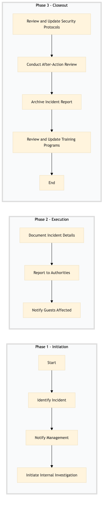

| Role | Steps |
|---|---|
| Security Officer | 1.1 1.3 2.1 2.2 3.1 3.3 |
| General Manager | 1.2 2.3 3.2 3.4 |
| Front Desk Agent | 2.3 |
| Step | Name | Role | System | Input | Output | KPI | Dec? | Exc? | Pain Point / Risk |
|---|---|---|---|---|---|---|---|---|---|
| 1.1 | Identify Incident | Security Officer | Oracle OPERA Cloud | Observation of suspicious activity or breach detection | Incident report form | Less than 2 minutes | N | Y | False positives can lead to unnecessary investigations. |
| 1.2 | Notify Management | General Manager | Oracle OPERA Cloud | Incident report form | Acknowledgment of receipt | Less than 5 minutes | N | Y | Delays in communication can escalate the situation. |
| 1.3 | Initiate Internal Investigation | Security Officer | Oracle OPERA Cloud, Honeywell INNCOM | Incident report form | Investigation plan | Less than 10 minutes | Y | Y | Limited access to surveillance footage can hinder the investigation. |
| 2.1 | Document Incident Details | Security Officer | Oracle OPERA Cloud, Knowcross HotSOS | Investigation findings | Detailed incident report | Less than 30 minutes | N | Y | Complex incidents require thorough documentation. |
| 2.2 | Report to Authorities | Security Officer | Oracle OPERA Cloud, Amadeus Delphi.fdc | Detailed incident report | Police report | Less than 1 hour | N | Y | Coordination with local law enforcement can be challenging. |
| 2.3 | Notify Guests Affected | Front Desk Agent | Oracle OPERA Cloud, Book4Time | Incident report form | Notification sent to affected guests | Less than 2 hours | Y | Y | Effective communication with guests is crucial. |
| 3.1 | Review and Update Security Protocols | General Manager, Security Officer | Oracle OPERA Cloud, SAP S/4HANA | Detailed incident report | Updated security protocols | Less than 24 hours | N | Y | Implementing changes without thorough review can lead to vulnerabilities. |
| 3.2 | Conduct After-Action Review | General Manager, Security Officer | Oracle OPERA Cloud, Workday HCM | Incident report form, updated security protocols | After-action review report | Less than 48 hours | N | Y | Lack of participation from all stakeholders can affect the effectiveness of the review. |
| 3.3 | Archive Incident Report | Security Officer | Oracle OPERA Cloud, Microsoft Power BI | After-action review report | Archived incident report | Less than 1 week | N | Y | Ensuring data security and compliance during archiving. |
| 3.4 | Review and Update Training Programs | General Manager, Security Officer | Oracle OPERA Cloud, Salesforce | After-action review report | Updated training programs | Less than 1 month | N | Y | Training programs must be relevant and engaging to staff. |
This process outlines how to report a security incident at a Marriott full-service hotel using Oracle OPERA Cloud PMS and other key systems.